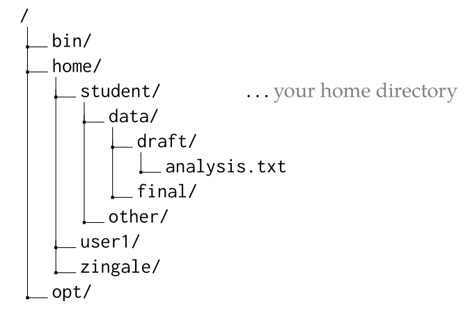

Midterm 1#
Bash shell#
Consider the following directory structure on a computer:

where the
/at the top of the tree is the root directory,bin/,home/, andopt/are subdirectories beneath/, and so forth.Your username on this machine is
studentand the location of your home directory is marked.Give the full (absolute) path to the file
analysis.txt.solution
/home/student/data/draft/analysis.txtRecall that absolute paths always begin with the root of the filesystem,
/.If you are in the directory
final/, give the relative path from there to the fileanalysis.txt.solution
From
final/, we need to go up and directory and then down intodraft, so the relative path is../draft/analysis.txt.If you are in the
other/directory, give a way to change directory to your home directory.solution
Any of
cd,cd .., orcd ~would work.If you are unsure of where you are in the filesystem, what command can tell you your location?
solution
You would use
pwd.
You are in your home directory on
portal. Give the sequence of commands to (1) create a directory calledtests/, (2) change directory intotests, and (3) open a file there with the text editor calledREADME.solution
mkdir tests cd tests nano README
You could use
emacsinstead ofnano–those are the 2 editors we’ve focused on.lsin your directory and see the following files:report-A1.pdf report-A1.txt report-A2.pdf report-A2.txt report-A3.pdf report-A3.txt report-B1.pdf report-B1.txt report-B2.pdf report-B2.txt report-B3.pdf report-B3.txt report-C1.pdf report-C1.txt report-C2.pdf report-C2.txt report-C3.pdf report-C3.txt
Using wildcards, how do you select all the PDF files?
solution
You could just do
*.pdfor if you wanted to be more specific,report-*.pdf.Using wildcards, how do you select all of the files that have an
Ain them?solution
There are several ways, including
*A?.*andreport-A?.*.
You created a file called
topics.txt. Anlsshows the following for your file:-rw-------. 1 user user 71 Feb 23 2026 topics.txt
You are using a machine in your research group, and there is a directory on that machine called
/home/common/that anyone on the machine can access.Give the commands to (1) move
topics.txtinto/home/common, and (2) to allow anyone on the computer to be able to read-from and write-to the file.solution
To move the file:
mv topics.txt /home/commonThen (assuming you are in
/home/common), to update the permissions, you could do:chmod a+rw topics.txtor do it in two steps:
chmod a+r topics.txt chmod a+w topics.txt
You could also use the numeric variation.
On the
portalserver, in a directory namedfiles/under your home directory, you have a file calledmyscript.sh. Give thescpcommand that will copy that file fromportalto your current directory on your computer (e.g., one of the desktops in the MathLab).solution
You want to pull the file from
portalto your local machine, so you would do:scp username@portal.mathlab.stonybrook.edu:~/files/myscript.sh .You could also write out the directory, as
/home/username/files/myscript.shinstead of using~.You created a script called
process.shand already set it up with the permissions to be executable. When run (it takes no arguments), it outputs a lot to the screen, so you want to redirect its output to a file namedoutput.txt.What is the full command to run the script and store the output in
output.txt?solution
./process.sh > output.txt
{kind=link}
C++ basics#
In class, we’ve looked at a basic “Hello, World!” program a number of times. Write a C++ program that outputs “Hello, World”.
solution
#include <iostream> int main() { std::cout << "Hello, World" << std::endl; }
To compile a file named
hello.cppto produce an executablehello, what is the full command that you use?solution
g++ -o hello hello.cppConsider the following two lines:
int a{-1.5}; int b = 2 * a + 1;
What is the value held by
bafter these lines are run?solution
-1.5cannot be represented as anint, so it is converted by truncation, resulting in-1, and then2 * (-1) + 1give-1.Consider the following two lines:
double x{2.0}; double y = x + 4 * x / 2;
What is the value held by
yafter these lines are run?solution
Multiplication and division have highest precedence, so this is
2.0 + (4 * 2.0 / 2)or6.0.You want to write a C++ program that computes \(x^{3/2}\) using double-precision floating point and
std::pow(). Recall thatstd::pow(x, y)means \(x^y\). Give the 2 lines of C++ code that (1) initializexto a value of10, and (2) compute \(x^{3/2}\), assigning the value to a new variabley.solution
double x{10.0}; double y = std::pow(x, 3.0/2.0);
Note that for the power, we need to use floating point, and not
3/2.The C++ math library includes a function
cos(x)that will take the cosine of the input \(x\). You want to use this in your code. Assume you have access to the value of \(\pi\) as the variablepi.What header do you need to
#include?solution
cmathWhat is line(s) of code needed to take the cosine of \(45^\circ\) and store the result in a variable called
s? Use a datatype that gives the most precision.solution
The key to remember is that the trig functions want the angle in radians. So we can do:
double s = std::cos(45.0 * pi / 180);